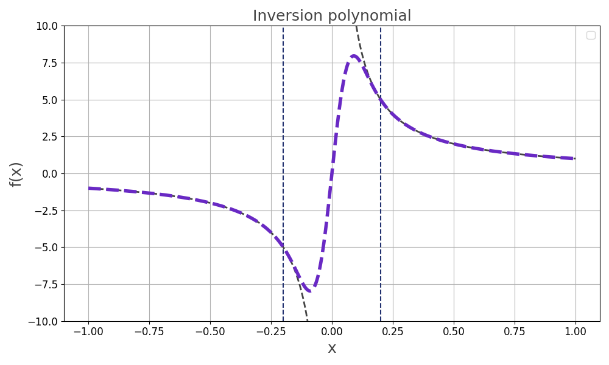

qrisp.gqsp.inversion#
- inversion(A: BlockEncoding, eps: float, kappa: float, method: Literal['QET', 'QSVT', 'GQSVT'] = 'QSVT') BlockEncoding[source]#
Quantum Linear System Solver via Quantum Eigenvalue Transformation (QET). Returns a BlockEncoding approximating the matrix inversion of the operator.
For a block-encoded not necessarily Hermitian matrix \(A\) with normalization factor \(\alpha\), this function returns a BlockEncoding of an operator \(\tilde{A}^{-1}\) such that \(\|\tilde{A}^{-1} - A^{-1}\| \leq \epsilon\).
The inversion is implemented via
Quantum Eigenvalue Transformation (QET) (\(A\) must be Hermitian)
Quantum Singular Value Transformation (QSVT)
Generalized Quantum Singular Value Transform (GQSVT)
using a polynomial approximation of \(1/x\) over the domain \(D_{\kappa} = [-1, -1/\kappa] \cup [1/\kappa, 1]\).

- Parameters:
- ABlockEncoding
The block-encoded matrix to be inverted. It is assumed that the eigenvalues of \(A/\alpha\) lie within \(D_{\kappa}\).
- epsfloat
The target precision \(\epsilon\).
- kappafloat
An upper bound for the condition number \(\kappa\) of \(A\). This value defines the “gap” around zero where the function \(1/x\) is not approximated.
- method{“QET”, “QSVT”, “GQSVT”}
The method for implementing the inversion.
"QET": Quantum Eigenvalue Transform (\(A\) must be Hermitian)"QSVT": Quantum Singular Value Transform"GQSVT": Generalized Quantum Singular Value Transform
Default is
"QSVT".
- Returns:
- BlockEncoding
A new BlockEncoding instance representing an approximation of the inverse \(A^{-1}\).
Notes
Complexity: The query complexity of the algorithm scales as \(\mathcal{O}(\kappa^2 \log(\kappa/\epsilon))\): Guaranteeing successful inversion with high probability requires repeating the procedure \(\mathcal{O}(\kappa)\) times, and each application of the polynomial requires \(\mathcal{O}(\kappa \log(\kappa/\epsilon))\) (the polynomial degree) queries to the block-encoding of \(A\).
References
Childs et al. (2017) Quantum algorithm for systems of linear equations with exponentially improved dependence on precision.
Examples
Define a QSLP and solve it using
inversion().First, define a Hermitian matrix \(A\) and a right-hand side vector \(\vec{b}\).
import numpy as np A = np.array([[0.73255474, 0.14516978, -0.14510851, -0.0391581], [0.14516978, 0.68701415, -0.04929867, -0.00999921], [-0.14510851, -0.04929867, 0.76587818, -0.03420339], [-0.0391581, -0.00999921, -0.03420339, 0.58862043]]) b = np.array([0, 1, 1, 1]) kappa = np.linalg.cond(A) print("Condition number of A: ", kappa) # Condition number of A: 1.8448536035491883
Generate a block-encoding of \(A\) and use
inversion()to find a block-encoding approximating \(A^{-1}\).from qrisp import * from qrisp.algorithms.gqsp import inversion from qrisp.operators import QubitOperator H = QubitOperator.from_matrix(A, reverse_endianness=True) BA = H.pauli_block_encoding() BA_inv = inversion(BA, 0.01, 2) # Prepares operand variable in state |b> def prep_b(): operand = QuantumVariable(2) prepare(operand, b) return operand @terminal_sampling def main(): operand = BA_inv.apply_rus(prep_b)() return operand res_dict = main() amps = np.sqrt([res_dict.get(i, 0) for i in range(len(b))])
Finally, compare the quantum simulation result with the classical solution:
c = (np.linalg.inv(A) @ b) / np.linalg.norm(np.linalg.inv(A) @ b) print("QUANTUM SIMULATION\n", amps, "\nCLASSICAL SOLUTION\n", c) # QUANTUM SIMULATION # [0.02844496 0.55538449 0.53010186 0.64010231] # CLASSICAL SOLUTION # [0.02944539 0.55423278 0.53013239 0.64102936]